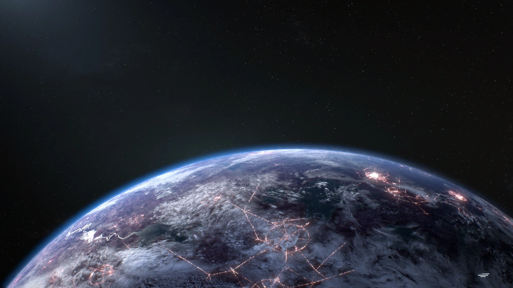
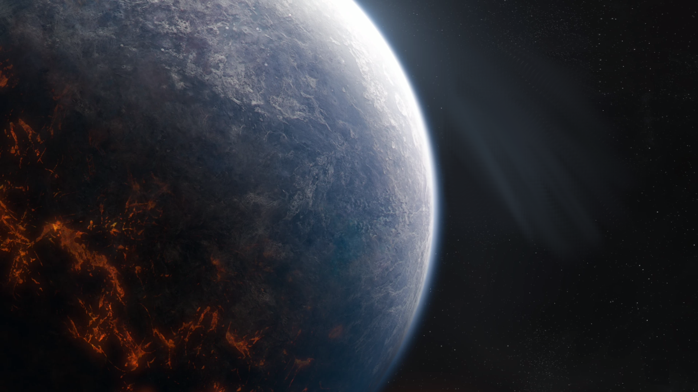
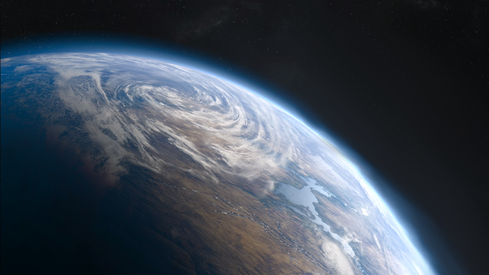

Naboo Trzeetapowy szturm na stolice Naboo. Drużyny droidów chronią olbrzymiego MTT zmierzającego powoli do pałacu królewskiego.
Baza Starkiller Nad bazą Starkiller szaleje bitwa myśliwców, a grupka członków Ruchu Oporu przeprowadza śmiały atak, by uratować więźniów przetrzymywanych w bazie Najwyższego Porządku.
Kamino Fale Kamino rozbijają się o brzeg sztucznej wyspy pod smukłymi platformami centrum klonowania, zaś armie droidów bojowych przypuszczają na nią szturm.
Takodana Na Takodanie Najwyższy Porządek atakuje zamek Maz Kanaty. Wojska Ruchu Oporu zajęły w środku pozycje obronne.
Jakku Siły Najwyższego Porządku otoczyły grupę bojowników Ruchu Oporu w porzuconym wraku gwiezdnego niszczyciela na pustyni Jakku.
Yavin 4 Głęboko wewnątrz Wielkiej Świątyni na Yavin 4 drzemie tajemnica będąca kluczem dla przetrwania Rebelii. Przybyły tu jednak naziemne siły Imperialne!
Druga Gwiazda Śmierci W trakcie rozszalałej bitwy o Endor korweta Sojuszu traci sterowność i rozbija się w otwartym hangarze potężnej Gwiazdy Śmierci. Ocalali rebelianci muszą przedrzeć się przez siły wroga!
Endor Rebelianckie siły starają się szybko wykraść maszynę kroczącą AT-AT i zaatakować za jej pomocą ukrytą bazę Imperium.
Hoth Powolne maszyny kroczące AT-AT zmierzają ku rebelianckim pozycjom osłaniane z powietrza, zaś ich przeciwnicy próbują utrzymać teren.
Kashyyyk Wojownicy Wookieech i żołnierze-klony okopują się, by bronić uziemionego krążownika przed desantem armii droidów na plażę.
Crait Znajdujący się w potrzasku Najwyższego Porządku bojownicy Ruchu Oporu próbują zapewnić sobie dość czasu, by obmyślić sposób ucieczki.
D'Qar Ruch Oporu sięga po improwizowane generatory pola grawitacyjnego w walce z ofensywą floty Najwyższego Porządku.
Kessel Planeta Kessel, na której mieszczą się osławione kopalnie przyprawy, jest również bogata w złoża coaxium, paliwo napędzające flotę Imperium.
Geonosis Separatyści przystąpili do oblężenia geonosjańskiej fabryki droidów zajmowanej przez saperów Republiki.
Bespin Rebelianci skierowują grupę uderzeniową do Miasta w Chmurach z nadzieją na zakłócenie wydobycia przez Imperium drogocennego gazu tibanna.
Felucja Republika Galaktyczna gromadzi pozostałe siły, żeby zabezpieczyć rolniczą społeczność Felucji i zdobyć cenną partię roślin leczniczych.
Ajan Kloss Najwyższy Porządek wypalił część tropikalnej puszczy porastającej tę planetę, aby przeprowadzić desant sił na pozycje Ruchu Oporu.
Scarif Piękna sceneria tropikalnej planety Scarif z jej wysepkami, palmami i krystalicznie czystymi wodami zostaje zaburzona przez górujące instalacje Imperium oraz nieoczekiwane wtargnięcie Rebelii.
Okręty flagowe Szturmuj i broń olbrzymie okręty flagowe, w tym gwiezdny niszczyciel typu Venator, pancernik Separatystów, krążownik MC85 i gwiezdny niszczyciel typu Resurgent.
 Fondor Sojusz rebeliancki atakuje imperialną instalację chronioną przez jednostki TIE. Czy Rebelia zdoła zlikwidować na czas zacumowany gwiezdny niszczyciel?
 Nieznany obszar Gwiezdny niszczyciel Najwyższego Porządku przemierza pole asteroid bez eskorty. Ruch oporu zwęrzył okazje i zamierza zaatakować z zaskoczenia w nadziei na wyeliminowanie niebezpiecznego okrętu bojowego wroga.
 Ryloth Republika Galaktyczna ruszyła na spotkanie wzywającego pomocy statku. Okazało się jednak, że to pułapka zastawiona przez potężny krążownik typu Lucrehulk. Obie strony toczą teraz rozpaczliwą walke o Ryloth.